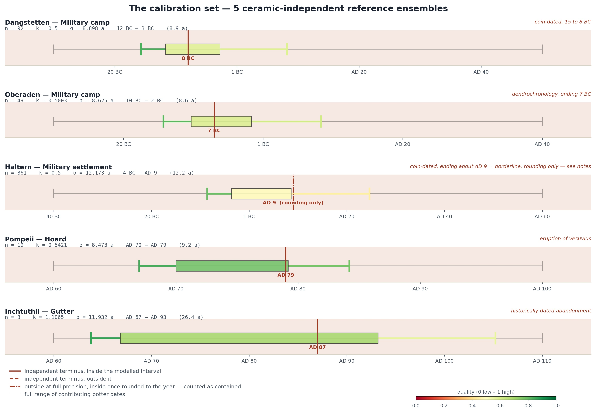

Purpose and scope
What the query claims, and what it deliberately does not claim.
The query dates findspots, not pottery and not potters. For each findspot it collects the stamps recovered there, looks up the production date range of each stamp's potter, and summarises those ranges into a single interval with an associated statement of confidence.
The resulting interval is a virtual fuzzy year: a compact central region of the date distribution implied by the stamps, not a statement about when the site was founded or abandoned. It is a typological estimate. Where a findspot is independently dated — by a destruction horizon, an inscription, or a historical source — that external date is better evidence than anything computed here, and this method makes no attempt to incorporate it.
eff_start, eff_end) answers when. The
quality measures (q_interval, q_repetition)
answer how well supported, along two independent axes. No quality measure
feeds back into the interval, and the interval does not feed into the quality
measures.
Unit of analysis and data sources
One row of output = one findspot, not one site.
Rows are grouped by (site, findspot). A site with several excavated
contexts therefore produces several rows — London, Colchester, Vindonissa and
La Graufesenque two each, Bregenz three at the snapshot of 25 August and four once the
context added in revision 31 arrives. This is deliberate: a single
site may contain contexts of very
different date and very different reliability, and collapsing them would average away
precisely the information the method depends on.
| Source | Provides | Joined on |
|---|---|---|
tbldistribution | stamp occurrences: site, findspot, potter name, die | — |
tblpotter | datemin, datemax per potter | lower(trim(pottername)) |
v_discoverysite | stable Linked Open Data identifier the_id | site = label |
The join to v_discoverysite resolves each site against the published
archaeology.link location dataset, so that every row carries a persistent identifier
suitable for RDF export rather than a name that has to be matched again downstream.
On the current selection this join succeeds for every row.
LEFT JOIN tblpotter, but the row comparison
(p.datemin, p.datemax) NOT IN (…) in the WHERE clause
evaluates to NULL, not to true, wherever the join failed and both
dates are NULL — so those rows are discarded. Stamps whose potter is
not present in tblpotter are silently absent from the result. This is
almost certainly the intended behaviour — an undated potter cannot contribute to a
date — but it rests on NULL propagation rather than on anything the
query says out loud. Until revision 30a the same effect came from an explicit
p.datemin <> 0.
Selection criteria
Which stamps enter the calculation.
-- applied to every stamp occurrence before aggregation WHERE di.isdate = 'Θ' AND di.sitecharacter = 'Σ' AND findspot IS NOT NULL AND (p.datemin, p.datemax) NOT IN ( -- eleven placeholder datings (-30,150), (0,100), (0,120), (0,130), (0,150), (0,180), (0,270), (100,200), (150,270), (160,260), (165,270) ) AND ( di.site NOT ILIKE '%Bregenz%' -- named inclusion, see below OR btrim(di.findspot) IN ('Böckleareal (period I)', 'Böckleareal (period II)', 'Böckleareal (destruction layer period II)', 'Samian Hoard 1913') ) GROUP BY vds.id, di.site, di.findspot, … HAVING COUNT(di.number) >= :min_stamps
U&-escapes — U&'\0398',
U&'\03A3', U&'B\00F6ckleareal …' — so that the
query does not depend on what encoding a connection happens to assume. They are
spelled out here for legibility only.
p.datemax NOT IN (260, 120, 150) and excluded a potter
on its end date alone, whatever its start date was. It is now a list of complete
(datemin, datemax) pairs — spans such as 0–100, 0–270 or 160–260 that
stand for "date not established" rather than for a production period. Pair logic
rather than AND logic: a potter genuinely dated to 160–260 would be
excluded, but one dated 165–260 is not.
Two things about it stay open. The list is a judgement about which spans are placeholders, and that judgement lives in the statement rather than in the database, where a flag on the potter record would belong; the same is true of the Bregenz clause below. And the exclusion is not neutral either way — it removes the affected potters at every findspot at which they occur, not at selected ones. Both must be recorded as provenance in any RDF export rather than applied silently.
py/verify.py reports how many of the admitted contexts actually arrived,
because a clause that matches nothing is indistinguishable in the output from a
findspot that was never admitted.
One further asymmetry is worth noting. The die-based measures in
§10 apply an additional filter, di.die IS NOT NULL,
because a stamp without a recorded die cannot contribute to a repetition count.
Consequently count_stamps (all qualifying stamps) and
n_stamps_die (those with a die) may differ. Since revision 30a it is
count_stamps that drives the coverage factor in
§7; n_stamps_die is descriptive only, and feeds
the die measures in §10.
Notation
Symbols used throughout, fixed for one findspot.
| Symbol | Meaning | SQL |
|---|---|---|
| \(i = 1 \dots n\) | stamp occurrences at the findspot | rows of tbldistribution |
| \(a_i\) | earliest production year of stamp \(i\)'s potter | p.datemin |
| \(b_i\) | latest production year of stamp \(i\)'s potter | p.datemax |
| \(w_i = b_i - a_i\) | width of that potter's range | — |
| \(c_i = \tfrac{a_i + b_i}{2}\) | midpoint of that potter's range | — |
| \(n\) | stamps at the findspot; the quantity that drives \(k\) | count_stamps |
| \(n_{\text{die}}\) | stamps with a recorded die; descriptive only | n_stamps_die |
| \(D\) | distinct \((\text{potter}, \text{die})\) pairs | n_dies |
| \(\sigma\) | aoristic dispersion of the findspot, in years: the standard deviation of the summed uniform blocks, combining each stamp's own fuzziness with the disagreement between stamps (§6) | sigma_effSQRT( AVG(POWER(datemax-datemin,2)/12.0) + COALESCE(VAR_SAMP((datemin+datemax)/2.0), 0) ) |
| \(k\) | coverage factor, dimensionless: how many \(\sigma\) wide the reported interval is made, falling from \(k_{\max}\) towards \(k_{\min}\) as \(n\) grows (§7) | k_effk_max - (k_max - k_min) * (1 - EXP(-COUNT(di.number)::numeric / tau))with k_max, k_min and tau read from the
params CTE |
| \(k_{\min}\) | coverage factor of a richly attested findspot; lower bound of the \(k\) curve | p_k_min |
| \(k_{\max}\) | coverage factor of a findspot with no attestations; upper bound of the \(k\) curve | p_k_max |
| \(\tau\) | saturation constant of the \(k\) curve, in stamps | p_tau |
| \(t_0\) | reference length for the edge measures, in years | p_t0 |
DISTINCT die within each potter first and
summing afterwards, not by a single COUNT(DISTINCT die) across the
findspot.
Central tendency
Where the distribution of dates sits.
avg_datemin, avg_datemax,
midpoint_year. The midpoint \(m\) is the anchor about which the fuzzy
year is built; \(\overline{a}\) and \(\overline{b}\) are reported for reference and
are not the plotted box.The extremes min_datemin, max_datemin,
min_datemax and max_datemax are reported unchanged. In the
plot they appear as the short stubs at either end, marking the outermost dates any
single potter at the findspot allows.
Dispersion: the aoristic \(\sigma\)
The core of the method, and the quantity most often got wrong.
Each stamp does not supply a date but a range. Following aoristic practice, each stamp is treated as distributing one unit of probability uniformly across the years its potter was active. The findspot's date distribution is the sum of those uniform blocks, and the dispersion wanted is the standard deviation of that sum.
That dispersion has two components, and the law of total variance separates them exactly:
For a uniform distribution on \([a_i, b_i]\) the within-stamp variance is \(w_i^{2}/12\); the between-stamp component is the sample variance of the midpoints \(c_i\). Hence:
SQRT( AVG(POWER(datemax-datemin,2)/12.0) + COALESCE(VAR_SAMP((datemin+datemax)/2.0), 0) ).
The COALESCE handles \(n = 1\), where the between-stamp variance is
undefined but the within-stamp fuzziness is still perfectly well defined.
The coverage factor \(k\)
How many standard deviations wide the reported interval is.
\(\sigma\) says how scattered the evidence is; \(k\) says how much of that scatter to show. It is a model parameter, not a confidence level: it expresses an archaeological convention about how far a findspot's evidence should be trusted, and it is driven by the quantity of that evidence.
The two constants: \(\tau\) and \(t_0\)
Two numbers that are not the same number, and one that is not Student's \(t\).
The model carries two constants whose symbols invite confusion. They govern different quantities, they are measured in different units, and they are arrived at by different means. Until the calibration described below they happened to carry the same value, which made the confusion cost-free — and therefore invisible.
| \(\tau\) | \(t_0\) | |
|---|---|---|
| Governs | the coverage factor \(k\), and through it the width of the box | the edge measures \(q_{\text{start}}\) and \(q_{\text{end}}\), and through them the whisker colours |
| Unit | stamps | years |
| Value | 6 | 20 |
| Arrived at by | empirical calibration against ceramic-independent reference ensembles | anchoring on stated expert thresholds for sharp and unusable datings |
| Enters as | \(e^{-n/\tau}\) | \(e^{-\sigma/t_0}\) |
\(\tau\): where 6 comes from
\(\tau\) is the assemblage size at which roughly 63 % of the available narrowing has been achieved. Setting it high makes the model cautious — even well-attested findspots keep a wide box; setting it low makes it confident, and a handful of stamps is then enough to claim a narrow date.
It was fixed empirically. Five findspots in the corpus are dated by evidence that does not depend on samian ware at all — though only four of them carry the criterion:
| Findspot | Independent evidence |
|---|---|
| Dangstetten, Military camp | coin-dated, 15 to 8 BC |
| Oberaden, Military camp | dendrochronology, ending 7 BC |
| Velsen, Velsen I | military base in operation, abandoned about AD 28 — contested, see below |
| Pompeii, Hoard | eruption of Vesuvius, AD 79 |
| Inchtuthil, Gutter | historically dated abandonment |

py/make_calibration_panels.py, which recomputes that and fails
loudly if it stops holding.\(\tau\) is the smallest value at which every one of these termini still falls inside the interval the model computes from the stamps alone. Smaller, and the model starts contradicting evidence it cannot see; larger, and it is being more cautious than the data require. That value is 6, down from the 20 used until the calibration.
What the number actually rests on
A criterion of this shape invites a question that is rarely asked of published calibrations: which of the references sets the value? Removing each in turn and recomputing the floor answers it.
| Reference removed | Smallest admissible \(\tau\) | Verdict |
|---|---|---|
| none | 4.78 | — |
| Dangstetten | 4.78 | not binding |
| Oberaden | 4.78 | not binding |
| Velsen I | 4.78 | not binding |
| Pompeii | 1.23 | binding |
| Inchtuthil | 4.78 | not binding |
Only Pompeii binds. The remaining four are contained comfortably by any \(\tau\) the others already require, and contribute nothing to the number. Stated plainly: arithmetically this is a one-ensemble calibration, and the four non-binding references are what makes the published \(\tau = 6\) a value with 1.22 of headroom above the floor rather than a value sitting on it.
The margins at \(\tau = 6\) show the same thing from the other side. Pompeii's terminus falls 0.2 years inside its interval; Inchtuthil's, computed from three stamps, 6.2 years inside.
lado:calibratedAgainst in the RDF, because a calibration whose
reference set is not named cannot be checked. The sweep, the leave-one-out table
and the margins above are produced by py/calibrate_tau.py and can be
recomputed whenever the data move.
\(t_0\): where 20 comes from
The edge measures answer a different question from \(k\): not how wide to draw the box, but how much to trust each of its two edges. Both read
Its value is anchored on two thresholds stated by the domain expert: a dispersion of about 5 years counts as a sharply dated edge, one of about 25 years as chronologically unusable. Setting \(t_0 = 20\) puts those two at
| Dispersion | Reading | \(q\) |
|---|---|---|
| 5 years | sharply dated | 0.78 |
| 20 years | \(q = e^{-1}\), by construction | 0.37 |
| 25 years | chronologically unusable | 0.29 |
The value is therefore a convention, but a traceable one: it is not chosen for elegance, and changing the two thresholds changes it in a stated way.
p_tau and p_t0 on every row, and
the query generator warns when they are equal.
The virtual fuzzy year
The plotted box; the interval exported to RDF.
Quality axis I: dating sharpness
q_interval — how closely the potters agree.
The endpoint measures follow the same shape but read the dispersion against a fixed reference length \(t_0 = 20\) years rather than against anything derived from the material:
CASE WHEN AVG(datemin) = 0 guard
prevented the division by zero but not the distortion. With a fixed \(t_0\) the
three quality measures are finally on comparable footing.
§7a
All three quality measures fall back to 0.5 via
COALESCE when their inputs are undefined — chiefly at \(n = 1\), where
no sample variance exists. In the plot this is a harmless neutral grey. In an RDF
export it becomes an assertion that the dating quality is 0.5, which is
fabricated. The export must omit these triples rather than emit the fallback.
Quality axis II: die repetition
die_repetition, q_repetition — the hoard signature.
When the same die recurs at a findspot, the assemblage carries the signature of a closed group — a merchant's consignment, a hoard, a single delivery — rather than the accumulated background of ordinary settlement rubbish. This is a statement about the character of the deposit, and it is archaeologically significant in its own right.
NULL, meaning "not measurable". The distinction matters for RDF, where
an absent triple and a triple asserting zero say different things.
Why the two axes are not combined
A rejected simplification, recorded because it is tempting.
A single composite quality score was drafted as the geometric mean \(\sqrt{q_{\text{interval}} \cdot q_{\text{repetition}}}\). It was abandoned, and the reason is instructive.
Because a geometric mean vanishes when either factor vanishes, any findspot without die repetition received a composite quality of exactly zero. Inchtuthil — \(q_{\text{interval}} = 0.7\), three stamps from three dies — was scored at 0, implying that its dating was worthless. It is not: it is a perfectly ordinary, reasonably sharp settlement assemblage that simply is not a hoard.
The two measures answer different questions and can vary independently in all four combinations:
| Low \(q_{\text{repetition}}\) | High \(q_{\text{repetition}}\) | |
|---|---|---|
| High \(q_{\text{interval}}\) | Sharply dated settlement context (Inchtuthil) | Sharply dated closed group — the ideal case |
| Low \(q_{\text{interval}}\) | Diffuse background scatter | Closed group of chronologically disparate material |
Collapsing that table into one number destroys exactly the contrast that makes each case interesting. Both measures are therefore reported side by side, in the table, in the hover panel, and as separate predicates in RDF.
Legacy quantities kept for the plot
Retained deliberately, but not part of the model.
These drive the whiskers. They are visual only: they predate the current dispersion model and use a different notion of spread from the \(\sigma\) of §6. Two consequences follow.
First, unc_interval_years is the standard deviation of the
sum \(a_i + b_i\) under an independence assumption that nothing in the data
justifies — it is not the dispersion of any quantity that appears in the model.
Second, the whiskers add \(s_a\) and \(s_b\) to a box that is already \(\pm k\sigma\)
wide, so two different measures of spread are drawn on top of one another.
Superseded formulation
What the query used to compute, and why it was replaced.
Earlier versions defined the box as
Three defects made this unusable as an exported date.
The quantity had no referent. \(\sqrt{s^2_a + s^2_b}\) is the standard deviation of \(a_i + b_i\), the sum of two calendar years — a quantity nobody wants. It scales like a dispersion without being the dispersion of anything in the model. The factor \(\tfrac{1}{2}\) was likewise unmotivated.
The conditional produced a discontinuity. The two branches return different kinds of quantity — a date range in one, a scatter band in the other — switched at a rounding threshold:
| \(\sqrt{s^2_a+s^2_b}\) | \(\overline{b}-\overline{a}\) | \(q_{\text{interval}}\) | Branch | Box width |
|---|---|---|---|---|
| 0 | 30 | 1.000 | date range | 30 years |
| 0.1 | 30 | 0.997 | scatter band | 0.1 years |
A negligible amount of disagreement collapsed the interval from thirty years to a
tenth of a year. As a thin rectangle in a plot this passes unnoticed; as
time:hasBeginning and time:hasEnd it asserts a findspot
dated to within seven weeks.
Neither branch counted the width of the potters' ranges. The within-stamp term of §6 was absent altogether.
Limitations and open questions
To be settled before publication.
- The excluded datings. Eleven placeholder
(datemin, datemax)pairs, and Bregenz admitted by name: two editorial judgements carried in the statement rather than flagged in the data, and neither is neutral. §3 - Fabricated fallbacks.
COALESCE(..., 0.5)on the quality measures andCOALESCE(..., 0)on the uncertainties turn "undefined" into a number. Tolerable in a plot, false in RDF, and the export omits the triple instead. The fallback on \(k\) itself was removed in revision 30a. §9 - Occurrence weighting. Averages are weighted by stamp count, not by potter. Defensible, but it must be stated. §5
- Later material is dated less sharply, and this is real. Intervals widen with the calendar: the median box width is about twelve years before AD 100 and about twenty-three years after it, a ratio of roughly one to two between the first century and the second and third. The cause is archaeological, not a defect of the model — see the note below — and no epoch correction is applied. One was tried in v27b and made the drift worse.
- Uniformity assumption. Each potter's range is treated as uniform. If production is better modelled as rising and falling, the \(w^2/12\) term would change; the structure of the decomposition would not.
- External dates are invisible. Historically fixed contexts receive no benefit from that fact. §7
- \(k_{\min}\) and \(k_{\max}\) are conventions, not estimates. Only \(\tau\) is calibrated; the two bounds were set by inspection, because five reference ensembles cannot separate three parameters. All five parameters travel with every row as provenance, or the intervals cannot be reproduced. §7a
Parameter reference
Everything adjustable, in one place.
| Parameter | Value | Effect | Set in |
|---|---|---|---|
| \(k_{\min}\) | 0.5 | narrowest interval, richly attested findspots | params CTE |
| \(k_{\max}\) | 1.5 | widest interval, thinly attested findspots | params CTE |
| \(\tau\) | 6 | assemblage size, in stamps, at which ~63 % of the narrowing is reached; calibrated, §7a | params CTE |
| \(t_0\) | 20 | reference length, in years, for \(q_{\text{start}}\) and \(q_{\text{end}}\); a convention, §7a | params CTE |
| \(w\) | 1.0 | weight of volume against repetition in \(k\); 1.0 = volume only | fixed, not exposed |
| within-stamp variance | \(w^2/12\) | uniform distribution across each potter's range | hard-coded |
Column glossary
Output of the query, in order of appearance.
| Column | Meaning | Status |
|---|---|---|
the_id | archaeology.link location identifier | key |
the_site, the_findspot | grouping unit | key |
latinsitename, long, lat, pleiades | descriptive attributes carried through | — |
count_stamps | qualifying stamp occurrences (all) | — |
avg_datemin, avg_datemax | \(\overline{a}\), \(\overline{b}\) | reference |
min_datemin … max_datemax | extremes; plotted as stubs | reference |
q_start, q_end | endpoint sharpness, \(e^{-s/t_0}\); whisker colour | model |
q_interval | dating sharpness — quality axis I | model |
n_dies | \(D\), distinct potter–die pairs | model |
die_repetition | \(r\), attestations per die | model |
q_repetition | hoard character — quality axis II | model |
avg_interval | display string of \(\overline{a}\) to \(\overline{b}\) | display |
unc_start_years, unc_end_years, unc_interval_years | whisker lengths | visual only |
midpoint_year | \(m\) | model |
n_stamps_die | \(n_{\text{die}}\); descriptive since 30a, no longer an input to \(k\) | model |
k_eff, sigma_eff | \(k\) and \(\sigma\), the two factors of the half-width | model |
k_no_dierecord | true where no die is recorded at all; a gap in the record, with no effect on the interval | model |
p_k_min … p_t0 | the five model parameters, carried on every row as provenance | model |
n_stamps_wide, n_potters_wide, max_potter_span | watchdogs for potters dated across 100 years or more | — |
eff_start, eff_end | the virtual fuzzy year | primary |
References
Methodological background.
- Johnson, I. (2004). Aoristic analysis: seeds of a new approach to mapping archaeological distributions through time. — the standard statement of distributing a find's probability mass uniformly across its date range.
- Crema, E. R. (2012). Modelling temporal uncertainty in archaeological analysis. — aggregation of aoristic distributions and the treatment of chronological uncertainty.
- Law of total variance — any standard probability text; the identity underlying §6.
- Variance of the continuous uniform distribution on \([a,b]\): \((b-a)^2/12\).
Full bibliographic details to be completed against the editions actually cited in the paper.